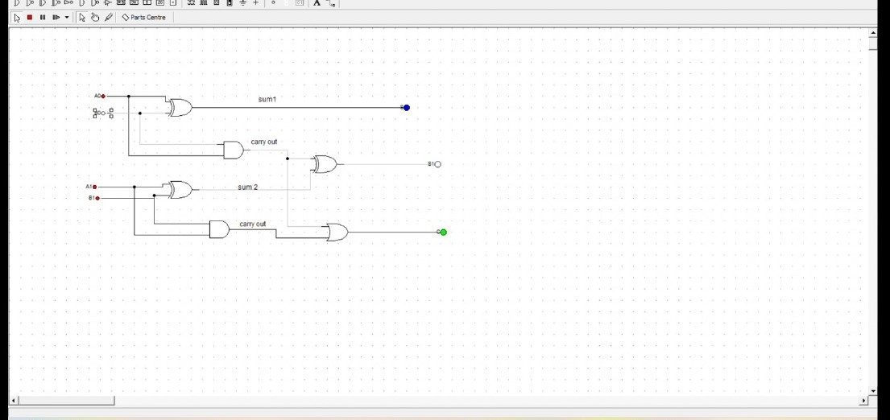
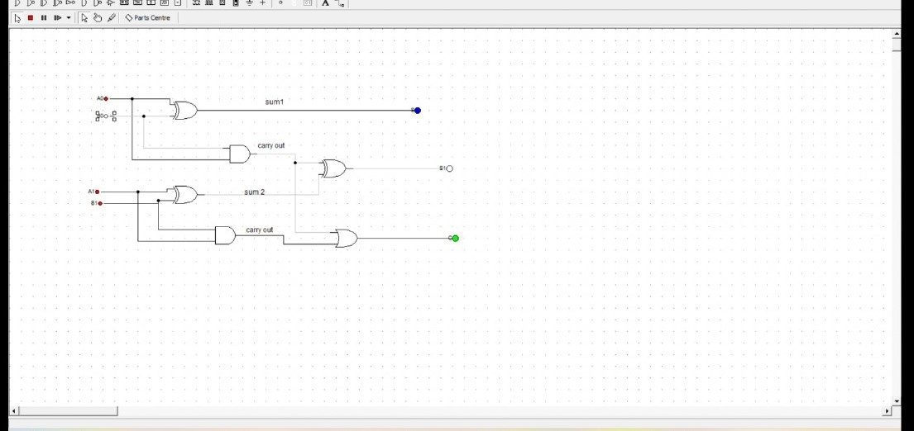

CS3520 GROUP ASSIGNMENT
GROUP MEMBERS:
REITUMETSE NHLAPHO -202200992
BOITUMELO LESAOANA- 202202305
POKANE KHALEMA -202201993
MOHAKA TS'OSANE- 202201986
MPHO LEMENA -202101680
THAKANE RAMPUKU -202100020
 

The objective of the assignment was to design the functionality of a 2-bit binary adder.
We revisited digital logic to recap on the usage of digital works which we used for simulation.We used A0 and B0 (LSB) as inputs for the first half adder and A1, B1 (MSB) and Carry-out of the first adder as inputs for the second adder.
We used different combinations of 2-bit binary numbers to test for functionality. Numbers such as 10 and 11 , 11 and 11 were functional. Some combinations such as 10 and 10, 01 and 00, 01 and 10 were not successful.